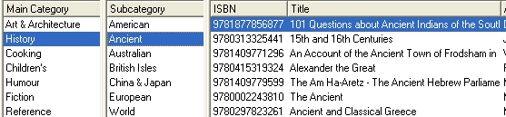
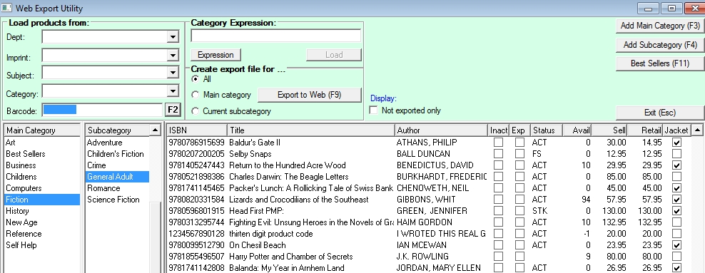

Bookscan allows you to create categories and sub-categories of your products for display on your web site.
The program also gives you a variety of ways to speed up adding products to your web categories and with a click of a button you can upload them to your web site.
If you wish, you can set up Bookscan to automatically update these categories as you add new products. See the Web Category Mapping section below.
Note: Before starting you will need to set the type of web site you are using. In System options, go to the Modules tab and select the website type in Web Site combo box.
Uploading products to your web site - a summary
| · | Set up the main web categories. These might be Art & Architecture, History, Humour, Children's, Cooking, Fiction, Reference, Sport, Crime, Management, Romance and Best Sellers.
|
| · | Within each main category, set up sub-categories. So the History category may have sub-categories of Ancient, European, American, Australian etc.
|
 |
|
|
| · | Add products to each sub-category. Products can belong to multiple sub-categories.
|
| Manual method
|
| In the Web Export window, enter products against each subcategory.
|
| (You can do this one by one or you can select groups of products by department, imprint, Bookscan category, or Onix subject).
|
| Automated method
|
| In the Web Category Mapping window, you can link web sub categories to individual departments, imprints, Bookscan categories, or Onix subjects.
|
| When creating new product codes in Bookscan, the product will automatically be added to the mapped web subcategory.
|
| After the mapping has been completed you can do your initial loading of products into your web sub categories with just a few button clicks.
|
| · | If you want to show Best Sellers on your, create and fill this category using the Best Sellers button on the Web Export window.
|
| · | To export your categories to the web site, click on the Update Web button.
|
| · | Open your web site and, in turn, click on these links in to complete the procedure:
|
| § | Import Bookscan categories (skip this step if only updating products).
|
| § | Import Bookscan titles
|
| § | Import Bookscan main category links (skip this step if only updating products).
|
Web Export window
The Web Export window is opened from the main menu: Modules/ Web Export/ Web Export.
|
|

The window contains three browsers:
| · | The first displays all the web main categories,
|
| · | The second displays all the sub categories for the currently selected main category and
|
| · | The third displays all the products on the currently selected subcategory.
|
You can choose to view either all products or only products not yet exported to the web using the 'Not Exported Only' check box.
NOTE: All main and sub caterory names must be unique and cannot contain the characters listed below:
/ \ ' " & ( ) ,
Setting up web main categories
Note that to make your web site easy to use, it may be best to use at most, ten to fifteen main categories on your web site.
| · Click on the Add Main Category (F3) button
|
| · Enter the category name e.g. History in the main category field.
|
| · If you are going to display an icon or picture with this category, select the patch of the picture file in the Picture Path field. (Not relevant for e-web users)
|
| · Click on the Save (F12) button.
|
| · Add all your main categories in this fashion.
|
Setting up web sub-categories
| · | Select a main category in the browser.
|
| · | Click on the Add Subcategory (F4) button.
|
| · | Enter the subcategory name e.g. Ancient History in the subcategory field.
|
| · | Click on the Save (F12) button.
|
| · | Add all your sub categories in this fashion.
|
Maintaining categories
| · | You can edit a category name by clicking on the category in the browser and using the right mouse to open the context menu. Select Edit Category from the menu.
|
| · | To delete a category, select it in the browser a select 'Delete Category' from the context menu. Note that when deleting a main category all its sub-categories and their products will also be deleted. Similarly deleting a sub-category deletes its products.
|
Changing the order of your main categories
Manual sorting
| · | Right click on the window to open the context menu.
|
| · | You will see that one of the two setting Double click to move UP and Double click to move DOWN.
|
| · | Change the setting if required.
|
| · | Double click on a main category to change its position in the list.
|
Automatic sort
You can sort your main categories alphabetically by opening the context menu and selecting 'Set main categories to alpha order'.
Note
Sub-categories appear in alphabetical order; their positions cannot be changed.
Adding a best sellers list
You do not need to manually create a best sellers category; the system will do this automatically.
| · | Click on the Best Sellers (F11) button. A window will be displayed with the best sellers parameters.
|
| · | Select:
|
| o | The sales date range.
|
| o | Whether you want the list based on quantity or profitability of sales.
|
| o | The number of products in the list.
|
| · | Click the Save Browser (F12) button (or if you're not happy with the list, the Discard Changes button).
|
| · | The Best Sellers main category and sub-category will be created and the products loaded into the subcategory.
|
Adding products to your web categories
You can add titles to a sub-Category manually by clicking Barcode (F2) or by scanning them in. You can also map Departments, Imprints, Subjests or Categories directly to the Web Categories you have created & populate them automatically. To do this see the Web Category Mapping page.
|
|
Upload to the web site
You are now ready to upload your categories and products to the web site. Instructions for users of the new Barcode Solutions e-Web web site follow immediately. Instructions for users of the earlier Barcode solutions web site and for other systems follow after that.
EXPORTING
Select the website type in Utilities - System Options - Modules tab, under the Web site section, middle left.

Also note; you can control which titles are uploaded by their publisher Status code using the Web flag in the Tables - Authority Tables - Status window.
Exporting to nopCommerce
Exporting to Other Sites